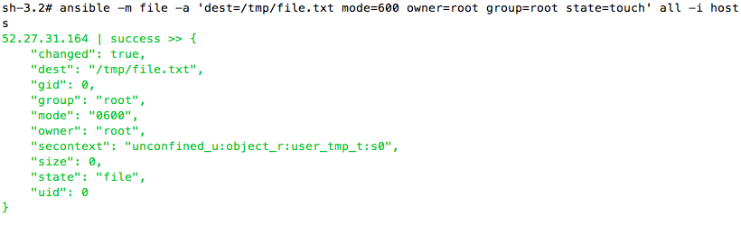
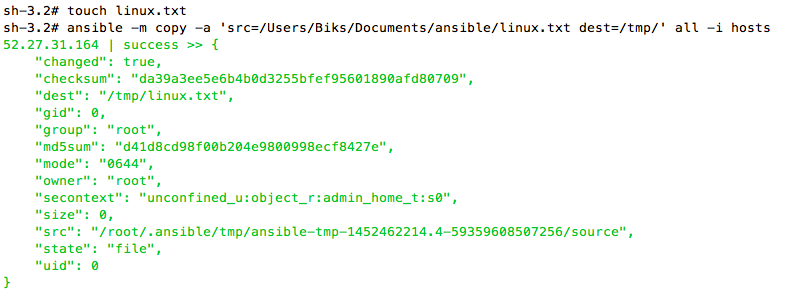
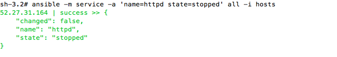
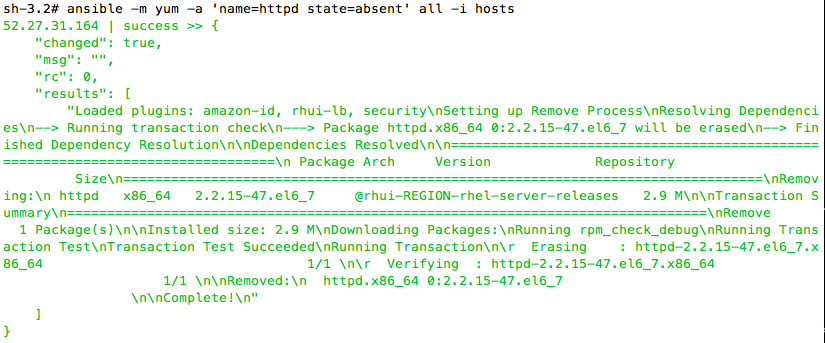
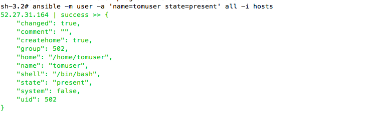
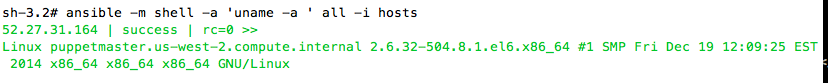

What is Ad-hoc and ansible modules ?
An ad-hoc command is something that you might type in to do something really quick and do not save it for later. This is the best way to start to learn ansible and see how it works prior learning playbook, which is a file for writing the ansible command. Ansible uses modules to perform the Ad-hoc i.e to perform various tasks like copying files, creating the users, installing packages.
-m is to specify the module name
-a is to specify the action for module
can run all the modules with any username -u username, also can specify sudo command
$ ansible -m file -a 'dest=/tmp/dir state=directory' --sudo -u username
File command
Creating the file
$ anisble -m file -a 'dest=/tmp/file.txt mode=600 owner=root group=root state=touch'
Creating the directory
$ anisble -m file -a 'dest=/tmp/file mode=600 owner=root group=root state=directory'
Removeing the file/directory
$ anisble -m file -a 'dest=/tmp/file.txt mode=600 owner=root group=root state=absent'
Copy command
Copying the file remotely form local machine to the servers.
$ ansible -m copy -a 'src=/tmp/file.txt dest=/tmp/' 192.168.1.4
Service
Starting the service
$ ansible -m services -a 'name=httpd state=started'
Stoping the service
$ ansible -m services -a 'name=httpd state=stopped'
Restarted the service
$ ansible -m services -a 'name=httpd state=restarted'
Package
Installing the package
ansible -m yum -a 'name=httpd state=present' hostname or all
Installing the package to specific version
ansible -m yum -a 'name=httpd.2.2 state=present' hostname
Installing the package to latest version
ansible -m yum -a 'name=httpd state=latest' hostname
Removing the package
ansible -m yum -a 'name=httpd state=absent' hostname
Users and Groups
Creating users
$ ansible -m user -a 'name=tomuser password=abc state=present'
Removing users
$ ansible -m user -a 'name=tomuser state=absent'
Shell module
Can run any shell comannd
ansible -m shell -a 'hostnane' ipaddress
anisble -m shell -a 'ps -ef | grep squid' hostname
Deploying the file/code from Git
anisble -m git -a 'repo=git://pinglinux.com/repo.git dest/var/tmp. version=Head'